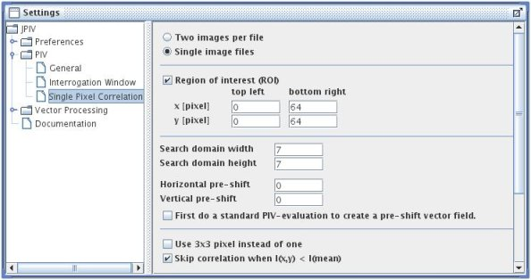

home
download
introduction
quick start
how to
reference
scripting
javadoc
repository

settings-panel: PIV - Single Pixel Correlation.
Two images per file
Select this option if your image files contain two frames. A two frame image is basically one image, where the upper half represents the first exposure and the lower half represents the second exposure of a PIV measurement.
Single image files
Use this option when you want to correlate the images of a time series with each other. Image one will be correlated with image two, image two with image three and so forth.
Region of interest (ROI)
Select this box to constrict the PIV evaluation to a portion of the image. Specify the upper left and the lower right corners of the region of interest in the text fields below.
Search domain witdh/height
When using single pixel ensemble correlatin, the size of the interrogation windows is one pixel. The size of the search area, however, should cover all possible displacements. The search domain size equals the size of the correlatin function. If you have large displacements, the necessarily large search area might lead to a high consumption of computer memory. It is advised to do use a standard PIV-evaluation first, to define a preshift file. Smaller search areas of, say 5x5, can then be used.
Horizontal/Vertical pre-shift
Defines a constant pre-shift of the search area.
First do a standard PIV-evaluation...
If selected, a standard PIV-evaluation is done prior to the single-pixel-ensemble evaluation to optain a pre-shift field for the search domain. The search domain size can be reduced in this way. Modify the settings on the panels PIV-General and PIV - Interrogation Window to get a meaningful shift file. Enable the ensemble correlation option on the PIV - General panel!
Use 3x3 pixel instead of one
A direct correlation of a 3x3 area with the search domain.
Skip correlation when I(x,y) < I(mean)
The product of the current pixel and a search area pixel is only calculated, when the intensity of the current pixel is higher than the average search area intensity. In this way, the correlation is only calculated when there is a particle at the current pixel. Noise and calculation time is significantly reduced by this method. (The threshold - average of the intensity of the search area - is probably a bit high and should be optimized in a future version of this software.)